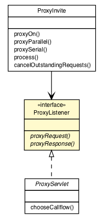

org.vorpal.blade.framework.proxy
Interface ProxyListener

- All Superinterfaces:
- java.io.Serializable
- All Known Implementing Classes:
- ProxyServlet
public interface ProxyListener
- extends java.io.Serializable
proxyRequest
ProxyTier proxyRequest(javax.servlet.sip.SipServletRequest request)
throws javax.servlet.ServletException,
java.io.IOException
- Throws:
javax.servlet.ServletException
java.io.IOException
proxyResponse
void proxyResponse(javax.servlet.sip.SipServletResponse response)
throws javax.servlet.ServletException,
java.io.IOException
- Throws:
javax.servlet.ServletException
java.io.IOException
Copyright © 2013-2021 Vorpal Networks, LLC. All Rights Reserved.